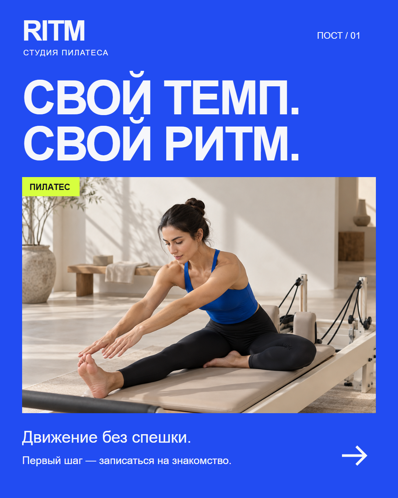
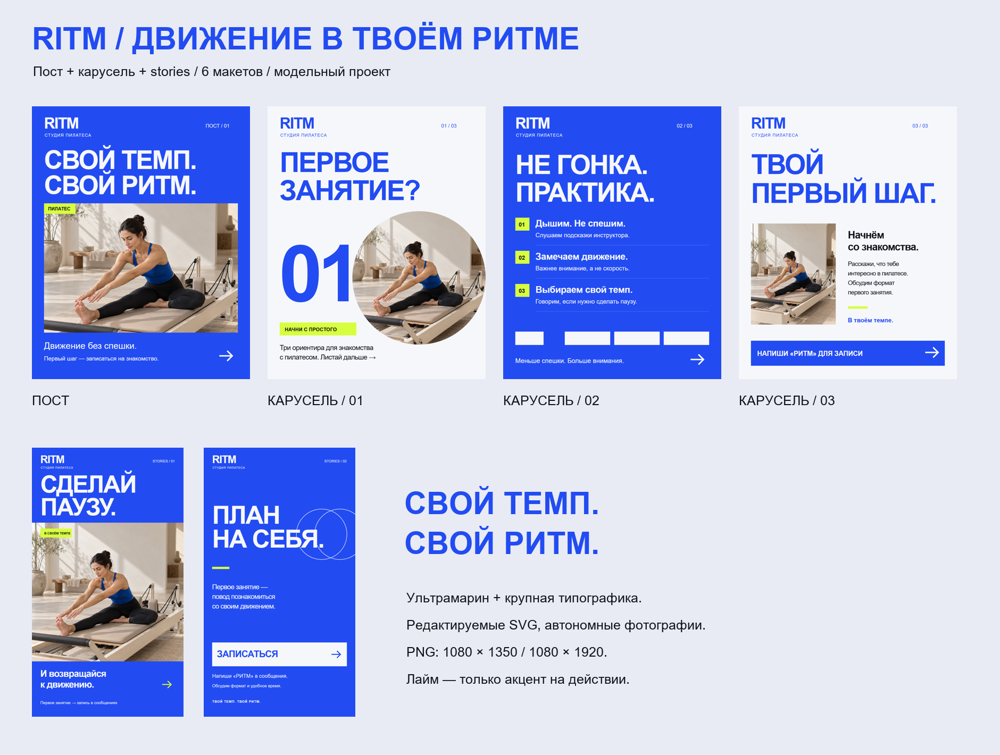

Заметить
Пост знакомит с характером студии и выделяется в ленте.
Пилатес. Свой темп. Свой ритм.
Визуальная система для знакомства со студией: от первого впечатления до записи на занятие.
Рассмотреть серию ↘
01 / Знакомство со студиейМодельный бриф
Студия пилатеса RITM обращается к тем, кто выбирает первое занятие. Задача — сделать контакт понятным и спокойным: показать настроение, дать три ориентира и предложить написать в сообщения. Без выдуманных отзывов, скидок и обещаний результата.
Сценарий серии
Пост знакомит с характером студии и выделяется в ленте.
Карусель объясняет подход: внимание, паузы и свой темп.
Stories предлагают написать «РИТМ» и обсудить запись.
Изображения открываются крупно.
Текст и формы в SVG редактируются.
Фотографии в макетах — тестовые. Перед публикацией их нужно заменить на реальные фотографии студии или согласованные изображения заказчика.
Большой тезис и фото в одном поле. Первое знакомство без перегруза.
Крупный вопрос открывает тему. Круглый кадр меняет ритм ленты.
Три коротких пункта. Нумерация помогает сканировать содержание.
Спокойная развязка: что обсудить и как начать разговор.
Дизайн-система
Ультрамарин задаёт узнаваемость. Белые поля дают паузу. Лайм выделяет маленькие маркеры, не споря с фотографией. Крупный гротеск связывает разные форматы.
Arial Bold / Regular · от 21 до 390 px
Поля 60 px · лента 4:5 · stories 9:16

Готовые материалы
Шесть автономных SVG с редактируемым текстом и встроенной фотографией. Шесть PNG в исходных размерах. Инструкция по редактированию и описание системы — в архиве.
Скачать дизайн-кит ↓RITM — вымышленная студия, демонстрационный проект для портфолио, не заказ реального клиента. Фотография создана встроенным генератором изображений. Занятия и запись не проводятся; это дизайн-сценарий. Шрифт Arial должен быть установлен при редактировании SVG. PNG — готовые растровые экспорты. Публикация в соцсетях, интерфейсные safe-зоны конкретной платформы и влияние дизайна на записи не проверялись.